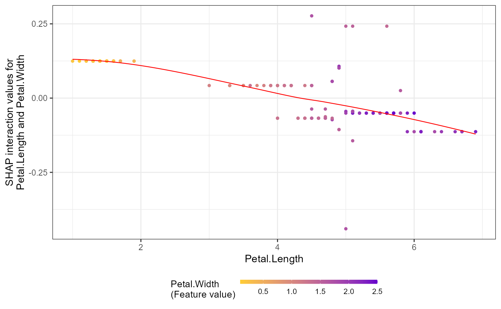

R/SHAP_funcs.R
shap.prep.interaction.Rdshap.prep.interaction just runs shap_int <- predict(xgb_mod, (X_train), predinteraction = TRUE), thus it may not be necessary.
Read more about the xgboost predict function at xgboost::predict.xgb.Booster. Note that this functionality is unavailable for LightGBM models.
shap.prep.interaction(xgb_model, X_train)
| xgb_model | a xgboost model object |
|---|---|
| X_train | the dataset of predictors used for the xgboost model |
a 3-dimention array: #obs x #features x #features
# To get the interaction SHAP dataset for plotting: # fit the xgboost model mod1 = xgboost::xgboost( data = as.matrix(iris[,-5]), label = iris$Species, gamma = 0, eta = 1, lambda = 0,nrounds = 1, verbose = FALSE) # Use either: data_int <- shap.prep.interaction(xgb_mod = mod1, X_train = as.matrix(iris[,-5])) # or: shap_int <- predict(mod1, as.matrix(iris[,-5]), predinteraction = TRUE) # **SHAP interaction effect plot ** shap.plot.dependence(data_long = shap_long_iris, data_int = shap_int_iris, x="Petal.Length", y = "Petal.Width", color_feature = "Petal.Width")#>